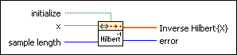

Inverse Fast Hilbert Transform PtByPt VI
Owning Palette: Transforms PtByPt VIs
Requires: Full Development System
Computes the inverse fast Hilbert transform of the set of input data points specified by sample length using Fourier transform identities.
This VI is similar to the Inverse Fast Hilbert Transform VI.
 | Note By default, reentrant execution is enabled in all Point By Point VIs. |

 Add to the block diagram Add to the block diagram |
 Find on the palette Find on the palette |